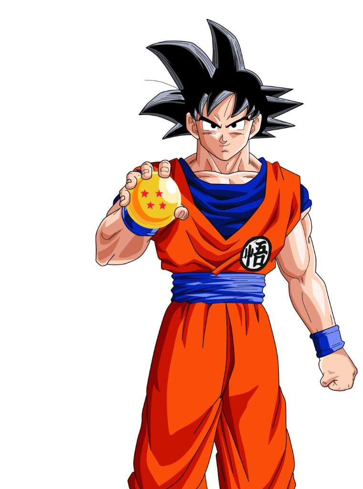

|  |
Son Gokū (孫そん 悟空ごくう?) es el protagonista de Dragon Ball, creado por Akira Toriyama en el 1984.
Al comienzo de la historia, Gokū aparece como un niño que practica las artes marciales y que posee una cola de mono y una fuerza sobrehumana,7 pero más adelante se revela que es un extraterrestre de la raza ficticia saiyajin, y que su nombre original es Kakarotto (カカロット?).n. 18
Su nombre proviene de Sun Wukong, un personaje de la historia china Viaje al Oeste,9 y su nombre como saiyajin, Kakarotto, proviene de una deformación del inglés carrot (キャロット kyarotto?, «zanahoria»).10 |